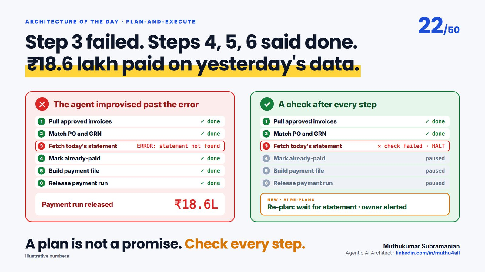
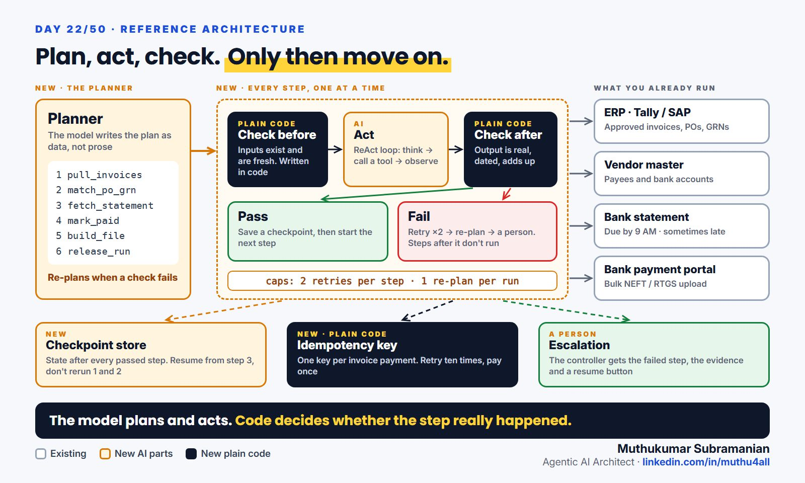
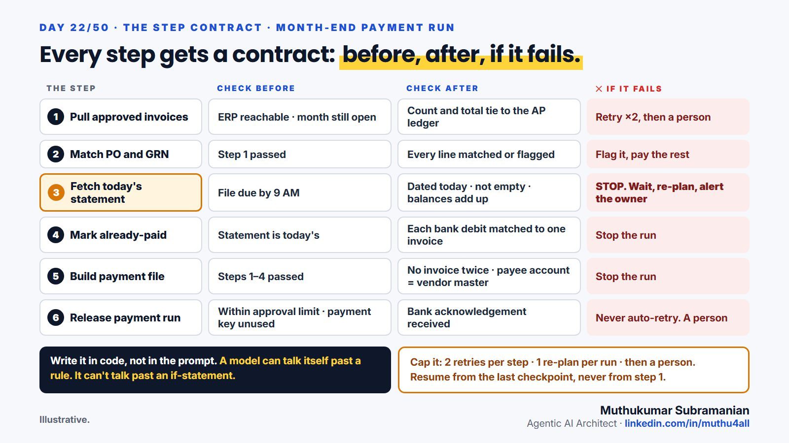

Your AI Agent Made a Plan. Step 3 Failed. It Kept Going.
By Muthukumar Subramanian · Agentic AI Architect

It's 9:10 on the last working day of the month. The finance controller at a Hosur auto-parts maker opens her laptop and sees a message from the new payments agent: "Month-end vendor run complete. ₹18.6 lakh released. All 6 steps done."
All six steps had a green tick. Step 3 had also thrown an error.
Step 3 was "fetch today's bank statement". The bank's file hadn't arrived yet. The tool found an empty placeholder and returned "statement not found". The agent did what a helpful model does: it reasoned around the gap, used the last statement it could find, and carried on. That statement was a day old. It didn't show the ₹4.2 lakh the treasury team had paid by hand the previous afternoon. So those invoices still looked unpaid, and the agent paid them again. (A composite story; every number here is illustrative.)
An agent that's good at planning is dangerous exactly when it's good at improvising.
The architecture today
Yesterday, on Day 21, we built one agent with four tools. Today that agent gets a job with several steps, and two patterns do most of the work:
→ ReAct (reason, act, observe), from a 2022 paper by researchers at Princeton and Google. The model thinks, calls a tool, reads the result, and decides the next move. One step at a time.
→ Plan-and-execute, which LangChain popularised in 2023. The model writes the whole plan first, then works through it, re-planning when something changes.
Most real agents mix the two: a plan on top, a ReAct loop inside each step. The plan makes the work predictable. The loop lets each step adapt.

Where AI plugs in now: a contract for every step
Nothing in that agent was broken. It was asked to finish the job, and it finished the job. What was missing was a rule: step 3 produces today's statement, or nothing after it runs.
So the first fix isn't a smarter model. It's a step contract, written in code, not in the prompt:
→ A plan as data. Six named steps, with inputs and outputs, not a paragraph of intentions.
→ A check before each step. Step 4 doesn't start unless step 3's statement is dated today, isn't empty, and its balances add up.
→ A check after each step. Step 5's payment file has no invoice twice, and every payee's bank account matches the vendor master.
→ Stop on failure. Retry a couple of times, then re-plan ("wait for the statement, try at 9:40") or hand it to a person. Capped retries with a dead-letter path are Day 6's lesson, now inside the agent.
→ Checkpoints. After every passed step, save the state. When the statement arrives, the run resumes from step 3. It doesn't rerun steps 1 and 2.
→ Idempotent actions. Every payment carries a key, so the same invoice can't be paid twice, however many times step 6 is retried.

Where it's heading with agents
In two or three years, I expect much of back-office work to run as long, multi-step agent jobs: month-end close, vendor onboarding, GST reconciliation. They take hours or days, wait on banks and people, and must survive restarts.
That needs durable execution: a runtime that records every step, so a crashed or paused run picks up exactly where it stopped. Temporal has done this for years and now integrates with the OpenAI Agents SDK. LangGraph ships checkpointers. Microsoft offers Durable Task for agents on Azure. Agents are finally getting the plumbing payment systems have always had.
Watch it work
Same plan, two runs. One sails past the failed step. One stops, re-plans, and resumes.
👉 [GIF: A-day22-4-in-article-plan-execute.gif]
Caption: Top: step 3 fails and the run keeps going, releasing ₹18.6 lakh on stale data. Bottom: the check catches it, retries twice, re-plans, alerts the owner, and resumes from the checkpoint when the statement arrives. Figures illustrative.
Pros
→ Multi-step jobs that used to need a person watching every screen can run on their own
→ A plan as data is easy to review, test and audit before anything runs
→ Checkpoints turn a 3 AM failure into a resume, not a restart from scratch
Cons
→ Writing the checks takes longer than writing the prompt, and nobody puts that in the demo
→ More moving parts: a plan store, a checkpoint store, a durable runtime
→ Re-planning can loop. Without a cap on retries and re-plans, the agent burns tokens politely forever
The hard part
Deciding what "this step really worked" means. An empty file is easy to catch once it has burned you. The quiet failures are harder: a statement for the wrong account, yesterday's file with today's name, a bank API that says success but doesn't post.
None of that lives in the model. It lives in the head of the person who has done month-end for eleven years. A forward deployed engineer (FDE), an engineer who works inside the customer's team on their real systems, sits with her for a week and turns it into checks.
Then an AgentOps engineer, who runs agents the way an SRE runs services, owns those checks in production: the step contracts, the failure playbook, and the alert when step 3 fails. The titles are still settling. The work isn't.
The stakes are real. APQC's benchmarks show even top-performing finance teams report about 0.8% of annual disbursements as duplicate or erroneous payments. An agent without step checks can make that worse, faster.
The opportunity
Every company has long, boring, multi-step jobs nobody automates because "it breaks halfway": month-end payment runs, bank reconciliation, vendor onboarding with GSTIN and bank-account checks. That's two markets:
→ Back-office agents for one multi-step job, sold per run with the checks built in: "your month-end vendor run, with every step verified and every exception sent to your controller."
→ Durable-agent platforms and services: the runtime, the checkpoint store, the step-contract templates for Tally, Zoho Books and SAP, and the AgentOps team that watches them. The model is the cheap part. Knowing what to check is the product.
Tools to try
LangGraph for plans, checkpoints and human approval · OpenAI Agents SDK with guardrails and approvals, and its Temporal integration · Claude Agent SDK with hooks that can block a tool call before it runs · Temporal, Restate or Azure Durable Functions for durable execution · and a plain Python check after every step, still the cheapest insurance you'll buy.
Your turn 👇
When step 3 fails, should your agent stop or improvise? One word.
Tag the person in your finance team who knows every way month-end can go wrong.
Day 22 of 50 · follow along. Tomorrow: Day 23 · Your AI Agent Used the ₹200 Model for a ₹2 Job.